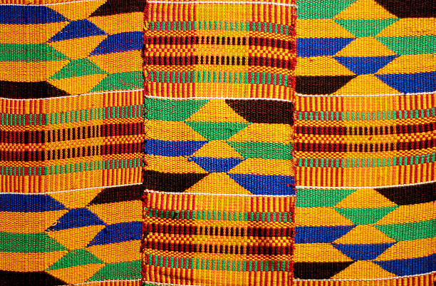

Discover Your Ancestral Roots
Start your journey to reconnect with your lineage, heritage, and truth.
Why It Matters
Our DNA carries the stories of those who came before us. Taking an ancestry DNA test is a powerful step toward reclaiming identity, rebuilding connections, and restoring pride in our legacy.
Top DNA Testing Services
Visual Connections

Benin Bronze

Mali Empire Map

Kente Cloth
Testimonials
"I always felt a disconnect until I found my roots in Nigeria and Cameroon. Knowing my heritage gave me a deeper sense of self." — Maya R.
"Through African Ancestry, I discovered I descend from the Mende people of Sierra Leone. Now I walk with pride knowing who I come from." — Jamal D.